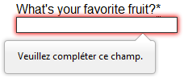

Before submitting data to the server, it is important to ensure all required form controls are filled out, in the correct format. This is called client-side form validation, and helps ensure data submitted matches the requirements set forth in the various form controls. This article leads you through basic concepts and examples of client-side form validation.
| Prerequisites: | Computer literacy, a reasonable understanding of HTML, CSS, and JavaScript. |
|---|---|
| Objective: | To understand what client-side form validation is, why it's important, and how to apply various techniques to implement it. |
Client-side validation is an initial check and an important feature of good user experience; by catching invalid data on the client-side, the user can fix it straight away. If it gets to the server and is then rejected, a noticeable delay is caused by a round trip to the server and then back to the client-side to tell the user to fix their data.
However, client-side validation should not be considered an exhaustive security measure! Your apps should always perform security checks on any form-submitted data on the server-side as well as the client-side, because client-side validation is too easy to bypass, so malicious users can still easily send bad data through to your server. Read Website security for an idea of what could happen; implementing server-side validation is somewhat beyond the scope of this module, but you should bear it in mind.
Go to any popular site with a registration form, and you will notice that they provide feedback when you don't enter your data in the format they are expecting. You'll get messages such as:
This is called form validation. When you enter data, the browser and/or the web server will check to see that the data is in the correct format and within the constraints set by the application. Validation done in the browser is called client-side validation, while validation done on the server is called server-side validation. In this chapter we are focusing on client-side validation.
If the information is correctly formatted, the application allows the data to be submitted to the server and (usually) saved in a database; if the information isn't correctly formatted, it gives the user an error message explaining what needs to be corrected, and lets them try again.
We want to make filling out web forms as easy as possible. So why do we insist on validating our forms? There are three main reasons:
There are two different types of client-side validation that you'll encounter on the web:
One of the most significant features of HTML5 form controls is the ability to validate most user data without relying on JavaScript. This is done by using validation attributes on form elements. We've seen many of these earlier in the course, but to recap:
required: Specifies whether a form field needs to be filled in before the form can be submitted.minlength and maxlength: Specifies the minimum and maximum length of textual data (strings)min and max: Specifies the minimum and maximum values of numerical input typestype: Specifies whether the data needs to be a number, an email address, or some other specific preset type. pattern: Specifies a regular expression that defines a pattern the entered data needs to follow.If the data entered in a form field follows all of the rules specified by the above attributes, it is considered valid. If not, it is considered invalid.
When an element is valid, the following things are true:
When an element is invalid, the following things are true:
Note: There are several errors that will prevent the form from being submitted, including a {{domxref('validityState.badInput', 'badInput')}}, {{domxref('validityState.patternMismatch','patternMismatch')}}, {{domxref('validityState.rangeOverflow','rangeOverflow')}} or {{domxref('validityState.rangeUnderflow','rangeUnderflow')}}, {{domxref('validityState.stepMismatch','stepMismatch')}}, {{domxref('validityState.tooLong','tooLong')}} or {{domxref('validityState.tooShort','tooShort')}}, {{domxref('validityState.typeMismatch','typeMismatch')}}, {{domxref('validityState.valueMissing','valueMissing')}}, or a {{domxref('validityState.customError','customError')}}.
In this section, we'll test out some of the attributes that we discussed above.
Let's start with a simple example: an input that allows you to choose whether you prefer a banana or a cherry. This example involves a simple text {{HTMLElement("input")}} with an associated {{htmlelement("label")}} and a submit {{htmlelement("button")}}. Find the source code on GitHub at fruit-start.html and a live example below.
<form> <label for="choose">Would you prefer a banana or cherry?</label> <input id="choose" name="i_like"> <button>Submit</button> </form>
input:invalid {
border: 2px dashed red;
}
input:valid {
border: 2px solid black;
}
{{EmbedLiveSample("Simple_start_file", "100%", 80)}}
To begin, make a copy of fruit-start.html in a new directory on your hard drive.
The simplest HTML5 validation feature is the required attribute. To make an input mandatory, add this attribute to the element. When this attribute is set, the element matches the {{cssxref(':required')}} UI pseudo-class and the form won't submit, displaying an error message on submission when the input is empty. While empty, the input will also be considered invalid, matching the {{cssxref(':invalid')}} UI pseudo-class.
Add a required attribute to your input, as shown below.
<form> <label for="choose">Would you prefer a banana or cherry? (required)</label> <input id="choose" name="i_like" required> <button>Submit</button> </form>
Note the CSS that is included in the example file:
input:invalid {
border: 2px dashed red;
}
input:invalid:required {
background-image: linear-gradient(to right, pink, lightgreen);
}
input:valid {
border: 2px solid black;
}
This CSS causes the input to have a red dashed border when it is invalid and a more subtle solid black border when valid. We also added a background gradient when the input is required and invalid. Try out the new behavior in the example below:
{{EmbedLiveSample("The_required_attribute", "100%", 80)}}
Note: You can find this example live on GitHub as fruit-validation.html (see also the source code.)
Try submitting the form without a value. Note how the invalid input gets focus, a default error message ("Please fill out this field") appears, and the form is prevented from being sent.
The presence of the required attribute on any element that supports this attribute means the element matches the {{cssxref(':required')}} pseudoclass whether it has a value or not. If the {{HTMLElement("input")}} has no value, the input will match the {{cssxref(':invalid')}} pseudoclass.
Note: For good user experience, indicate to the user when form fields are required. It isn't only good user experience, it is required by WCAG accessibility guidelines. Also, only require users to input data you actually need: For example, why do you really need to know someone's gender or title?
Another useful validation feature is the pattern attribute, which expects a Regular Expression as its value. A regular expression (regex) is a pattern that can be used to match character combinations in text strings, so regexps are ideal for form validation and serve a variety of other uses in JavaScript.
Regexps are quite complex, and we don't intend to teach you them exhaustively in this article. Below are some examples to give you a basic idea of how they work.
a — Matches one character that is a (not b, not aa, and so on).abc — Matches a, followed by b, followed by c.ab?c—Matches a, optionally followed by a single b, followed by c. ( ac or abc)ab*c—Matches a, optionally followed by any number of bs, followed by c. ( ac , abc, abbbbbc, and so on).a|b — Matches one character that is a or b.abc|xyz — Matches exactly abc or exactly xyz (but not abcxyz or a or y, and so on).There are many more possibilities that we don't cover here. For a complete list and many examples, consult our Regular expressions documentation.
Let's implement an example. Update your HTML to add a pattern attribute like this:
<form> <label for="choose">Would you prefer a banana or a cherry?</label> <input id="choose" name="i_like" required pattern="[Bb]anana|[Cc]herry"> <button>Submit</button> </form>
input:invalid {
border: 2px dashed red;
}
input:valid {
border: 2px solid black;
}
This gives us the following update — try it out:
{{EmbedLiveSample("Validating_against_a_regular_expression", "100%", 80)}}
Note: You can find this example live on GitHub as fruit-pattern.html (see also the source code.)
In this example, the {{HTMLElement("input")}} element accepts one of four possible values: the strings "banana", "Banana", "cherry", or "Cherry". Regular expressions are case-sensitive, but we've made it support capitalized as well as lower-case versions using an extra "Aa" pattern nested inside square brackets.
At this point, try changing the value inside the pattern attribute to equal some of the examples you saw earlier, and look at how that affects the values you can enter to make the input value valid. Try writing some of your own, and see how it goes. Make them fruit-related where possible so that your examples make sense!
If a non-empty value of the {{HTMLElement("input")}} doesn't match the regular expression's pattern, the input will match the {{cssxref(':invalid')}} pseudoclass.
Note: Some {{HTMLElement("input")}} element types don't need a pattern attribute to be validated against a regular expression. Specifying the email type, for example, validates the inputs value against a well-formed email address pattern or a pattern matching a comma-separated list of email addresses if it has the multiple attribute.
Note: The {{HTMLElement("textarea")}} element doesn't support the pattern attribute.
You can constrain the character length of all text fields created by {{HTMLElement("input")}} or {{HTMLElement("textarea")}} by using the minlength and maxlength attributes. A field is invalid if it has a value and that value has fewer characters than the minlength value or more than the maxlength value.
Browsers often don't let the user type a longer value than expected into text fields. A better user experience than just using maxlength is to also provide character count feedback in an accessible manner and let them edit their content down to size. An example of this is the character limit seen on Twitter when Tweeting. JavaScript, including solutions using maxlength, can be used to provide this
For number fields (i.e. <input type="number">), the min and max attributes can be used to provide a range of valid values. If the field contains a value outside this range, it will be invalid.
Let's look at another example. Create a new copy of the fruit-start.html file.
Now delete the contents of the <body> element, and replace it with the following:
<form>
<div>
<label for="choose">Would you prefer a banana or a cherry?</label>
<input type="text" id="choose" name="i_like" required minlength="6" maxlength="6">
</div>
<div>
<label for="number">How many would you like?</label>
<input type="number" id="number" name="amount" value="1" min="1" max="10">
</div>
<div>
<button>Submit</button>
</div>
</form>
text field a minlength and maxlength of six, which is the same length as banana and cherry.number field a min of one and a max of ten. Entered numbers outside this range will show as invalid; users won't be able to use the increment/decrement arrows to move the value outside of this range. If the user manually enters a number outside of this range, the data is invalid. The number is not required, so removing the value will still result in a valid value.input:invalid {
border: 2px dashed red;
}
input:valid {
border: 2px solid black;
}
div {
margin-bottom: 10px;
}
Here is the example running live:
{{EmbedLiveSample("Constraining_the_values_of_your_entries", "100%", 100)}}
Note: You can find this example live on GitHub as fruit-length.html (see also the source code.)
Note: <input type="number"> (and other types, such as range and date) can also take a step attribute, which specifies what increment the value will go up or down by when the input controls are used (such as the up and down number buttons). In the above example we've not included a step attribute, so the value defaults to 1. This means that floats, like 3.2, will also show as invalid.
Here is a full example to show usage of HTML's built-in validation features. First, some HTML:
<form>
<p>
<fieldset>
<legend>Do you have a driver's license?<abbr title="This field is mandatory" aria-label="required">*</abbr></legend>
<!-- While only one radio button in a same-named group can be selected at a time,
and therefore only one radio button in a same-named group having the "required"
attribute suffices in making a selection a requirement -->
<input type="radio" required name="driver" id="r1" value="yes"><label for="r1">Yes</label>
<input type="radio" required name="driver" id="r2" value="no"><label for="r2">No</label>
</fieldset>
</p>
<p>
<label for="n1">How old are you?</label>
<!-- The pattern attribute can act as a fallback for browsers which
don't implement the number input type but support the pattern attribute.
Please note that browsers that support the pattern attribute will make it
fail silently when used with a number field.
Its usage here acts only as a fallback -->
<input type="number" min="12" max="120" step="1" id="n1" name="age"
pattern="\d+">
</p>
<p>
<label for="t1">What's your favorite fruit?<abbr title="This field is mandatory" aria-label="required">*</abbr></label>
<input type="text" id="t1" name="fruit" list="l1" required
pattern="[Bb]anana|[Cc]herry|[Aa]pple|[Ss]trawberry|[Ll]emon|[Oo]range">
<datalist id="l1">
<option>Banana</option>
<option>Cherry</option>
<option>Apple</option>
<option>Strawberry</option>
<option>Lemon</option>
<option>Orange</option>
</datalist>
</p>
<p>
<label for="t2">What's your e-mail address?</label>
<input type="email" id="t2" name="email">
</p>
<p>
<label for="t3">Leave a short message</label>
<textarea id="t3" name="msg" maxlength="140" rows="5"></textarea>
</p>
<p>
<button>Submit</button>
</p>
</form>
And now some CSS to style the HTML:
form {
font: 1em sans-serif;
max-width: 320px;
}
p > label {
display: block;
}
input[type="text"],
input[type="email"],
input[type="number"],
textarea,
fieldset {
width : 100%;
border: 1px solid #333;
box-sizing: border-box;
}
input:invalid {
box-shadow: 0 0 5px 1px red;
}
input:focus:invalid {
box-shadow: none;
}
This renders as follows:
{{EmbedLiveSample("Full_example", "100%", 420)}}
See Validation-related attributes for a complete list of attributes that can be used to constrain input values and the input types that support them.
Note: You can find this example live on GitHub as full-example.html (see also the source code.)
You must use JavaScript if you want to take control over the look and feel of native error messages or to deal with legacy browsers that do not support HTML's built-in form validation. In this section we will look at the different ways to do this.
Most browsers support the Constraint Validation API, which consists of a set of methods and properties available on the following form element DOM interfaces:
HTMLButtonElement (represents a <button> element)HTMLFieldSetElement (represents a <fieldset> element)HTMLInputElement (represents an <input> element)HTMLOutputElement (represents an <output> element)HTMLSelectElement (represents a <select> element)HTMLTextAreaElement (represents a <textarea> element)The Constraint validation API makes the following properties available on the above elements.
validationMessage: Returns a localized message describing the validation constraints that the control doesn't satisfy (if any). If the control is not a candidate for constraint validation (willValidate is false) or the element's value satisfies its constraints (is valid), this will return an empty string.validity: Returns a ValidityState object that contains several properties describing the validity state of the element. You can find full details of all the available properties in the {{domxref("ValidityState")}} reference page; below is listed a few of the more common ones:
true if the value does not match the specified {{htmlattrxref("pattern", "input")}}, and false if it does match. If true, the element matches the {{cssxref(":invalid")}} CSS pseudo-class.true if the value is longer than the maximum length specified by the {{htmlattrxref("maxlength", "input")}} attribute, or false if it is shorter than or equal to the maximum. If true, the element matches the {{cssxref(":invalid")}} CSS pseudo-class.true if the value is shorter than the minimum length specified by the {{htmlattrxref("minlength", "input")}} attribute, or false if it is greater than or equal to the minimum. If true, the element matches the {{cssxref(":invalid")}} CSS pseudo-class.true if the value is greater than the maximum specified by the {{htmlattrxref("max", "input")}} attribute, or false if it is less than or equal to the maximum. If true, the element matches the {{cssxref(":invalid")}} and {{cssxref(":out-of-range")}} CSS pseudo-classes.true if the value is less than the minimum specified by the {{htmlattrxref("min", "input")}} attribute, or false if it is greater than or equal to the minimum. If true, the element matches the {{cssxref(":invalid")}} and {{cssxref(":out-of-range")}} CSS pseudo-classes.true if the value is not in the required syntax (when {{htmlattrxref("type", "input")}} is email or url), or false if the syntax is correct. If true, the element matches the {{cssxref(":invalid")}} CSS pseudo-class.valid: Returns true if the element meets all its validation constraints, and is therefore considered to be valid, or false if it fails any constraint. If true, the element matches the {{cssxref(":valid")}} CSS pseudo-class; the {{cssxref(":invalid")}} CSS pseudo-class otherwise.valueMissing: Returns true if the element has a {{htmlattrxref("required", "input")}} attribute, but no value, or false otherwise. If true, the element matches the {{cssxref(":invalid")}} CSS pseudo-class.willValidate: Returns true if the element will be validated when the form is submitted; false otherwise.The Constraint Validation API also makes the following methods available on the above elements.
checkValidity(): Returns true if the element's value has no validity problems; false otherwise. If the element is invalid, this method also fires an invalid event on the element.setCustomValidity(message): Adds a custom error message to the element; if you set a custom error message, the element is considered to be invalid, and the specified error is displayed. This lets you use JavaScript code to establish a validation failure other than those offered by the standard HTML5 validation constraints. The message is shown to the user when reporting the problem.As you saw in the HTML5 validation constraint examples earlier, each time a user tries to submit an invalid form, the browser displays an error message. The way this message is displayed depends on the browser.
These automated messages have two drawbacks:

Customizing these error messages is one of the most common use cases of the constraint validation API. Let's work through a simple example of how to do this.
We'll start with some simple HTML (feel free to put this in a blank HTML file; use a fresh copy of fruit-start.html as a basis, if you like):
<form> <label for="mail">I would like you to provide me with an e-mail address:</label> <input type="email" id="mail" name="mail"> <button>Submit</button> </form>
And add the following JavaScript to the page:
const email = document.getElementById("mail");
email.addEventListener("input", function (event) {
if (email.validity.typeMismatch) {
email.setCustomValidity("I am expecting an e-mail address!");
} else {
email.setCustomValidity("");
}
});
Here we store a reference to the email input, then add an event listener to it that runs the contained code each time the value inside the input is changed.
Inside the contained code, we check whether the email input's validity.typeMismatch property returns true, meaning that the contained value doesn't match the pattern for a well-formed email address. If so, we call the {{domxref("HTMLInputElement.setCustomValidity()","setCustomValidity()")}} method with a custom message. This renders the input invalid, so that when you try to submit the form, submission fails and the custom error message is displayed.
If the validity.typeMismatch property returns false, we call the setCustomValidity() method an empty string. This renders the input valid, so the form will submit.
You can try it out below:
{{EmbedGHLiveSample("learning-area/html/forms/form-validation/custom-error-message.html", '100%', 80)}}
Note: You can find this example live on GitHub as custom-error-message.html (see also the source code.)
Now that we've seen a really simple example, let's see how we can use this API to build some slightly more complex custom validation.
First, the HTML. Again, feel free to build this along with us:
<form novalidate> <p> <label for="mail"> <span>Please enter an email address:</span> <input type="email" id="mail" name="mail" required minlength="8"> <span class="error" aria-live="polite"></span> </label> </p> <button>Submit</button> </form>
This simple form uses the novalidate attribute to turn off the browser's automatic validation; this lets our script take control over validation. However, this doesn't disable support for the constraint validation API nor the application of CSS pseudo-classes like {{cssxref(":valid")}}, etc. That means that even though the browser doesn't automatically check the validity of the form before sending its data, you can still do it yourself and style the form accordingly.
Our input to validate is an <input type="email">, which is required, and has a minlength of 8 characters. Let's check these using our own code, and show a custom error message for each one.
We are aiming to show the error messages inside a <span> element. The aria-live attribute is set on that <span> to make sure that our custom error message will be presented to everyone, including it being read out to screenreader users.
Note: A key point here is that setting the novalidate attribute on the form is what stops the form from showing its own error message bubbles, and allows us to instead display the custom error messages in the DOM in some manner of our own choosing.
Now onto some basic CSS to improve the look of the form slightly, and provide some visual feedback when the input data is invalid:
body {
font: 1em sans-serif;
width: 200px;
padding: 0;
margin : 0 auto;
}
p * {
display: block;
}
input[type=email]{
-webkit-appearance: none;
appearance: none;
width: 100%;
border: 1px solid #333;
margin: 0;
font-family: inherit;
font-size: 90%;
box-sizing: border-box;
}
/* This is our style for the invalid fields */
input:invalid{
border-color: #900;
background-color: #FDD;
}
input:focus:invalid {
outline: none;
}
/* This is the style of our error messages */
.error {
width : 100%;
padding: 0;
font-size: 80%;
color: white;
background-color: #900;
border-radius: 0 0 5px 5px;
box-sizing: border-box;
}
.error.active {
padding: 0.3em;
}
Now lets look at the JavaScript that implements the custom error validation.
// There are many ways to pick a DOM node; here we get the form itself and the email
// input box, as well as the span element into which we will place the error message.
const form = document.getElementsByTagName('form')[0];
const email = document.getElementById('mail');
const emailError = document.querySelector('#mail + span.error');
email.addEventListener('input', function (event) {
// Each time the user types something, we check if the
// form fields are valid.
if (email.validity.valid) {
// In case there is an error message visible, if the field
// is valid, we remove the error message.
emailError.textContent = ''; // Reset the content of the message
emailError.className = 'error'; // Reset the visual state of the message
} else {
// If there is still an error, show the correct error
showError();
}
});
form.addEventListener('submit', function (event) {
// if the email field is valid, we let the form submit
if(!email.validity.valid) {
// If it isn't, we display an appropriate error message
showError();
// Then we prevent the form from being sent by canceling the event
event.preventDefault();
}
});
function showError() {
if(email.validity.valueMissing) {
// If the field is empty,
// display the following error message.
emailError.textContent = 'You need to enter an e-mail address.';
} else if(email.validity.typeMismatch) {
// If the field doesn't contain an email address,
// display the following error message.
emailError.textContent = 'Entered value needs to be an e-mail address.';
} else if(email.validity.tooShort) {
// If the data is too short,
// display the following error message.
emailError.textContent = `Email should be at least ${ email.minLength } characters; you entered ${ email.value.length }.`;
}
// Set the styling appropriately
emailError.className = 'error active';
}
The comments explain things pretty well, but briefly:
showError() to show the appropriate error.showError() to show the appropriate error, and stop the form submitting with preventDefault().showError() function uses various properties of the input's validity object to determine what the error is, and then displays an error message as appropriate.Here is the live result:
{{EmbedGHLiveSample("learning-area/html/forms/form-validation/detailed-custom-validation.html", '100%', 150)}}
Note: You can find this example live on GitHub as detailed-custom-validation.html (see also the source code.)
The constraint validation API gives you a powerful tool to handle form validation, letting you have enormous control over the user interface above and beyond what you can do with HTML and CSS alone.
Note: For further information, see our Constraint validation guide, and the Constraint Validation API reference.
In some cases, such as legacy browser support or custom controls, you won't be able to or won't want to use the Constraint Validation API.You're still able to use JavaScript to validate your form, but you'll just have to write your own.
To validate a form, ask yourself a few questions:
In order to illustrate this, the following is a simplified version of the previous example that works with legacy browsers.
The HTML is almost the same; we just removed the HTML validation features.
<form>
<p>
<label for="mail">
<span>Please enter an email address:</span>
<input type="text" id="mail" name="mail">
<span class="error" aria-live="polite"></span>
</label>
</p>
<!-- Some legacy browsers need to have the `type` attribute
explicitly set to `submit` on the `button`element -->
<button type="submit">Submit</button>
</form>
Similarly, the CSS doesn't need to change very much; we've just turned the {{cssxref(":invalid")}} CSS pseudo-class into a real class and avoided using the attribute selector that doesn't work on Internet Explorer 6.
body {
font: 1em sans-serif;
width: 200px;
padding: 0;
margin : 0 auto;
}
form {
max-width: 200px;
}
p * {
display: block;
}
input.mail {
-webkit-appearance: none;
width: 100%;
border: 1px solid #333;
margin: 0;
font-family: inherit;
font-size: 90%;
box-sizing: border-box;
}
/* This is our style for the invalid fields */
input.invalid{
border-color: #900;
background-color: #FDD;
}
input:focus.invalid {
outline: none;
}
/* This is the style of our error messages */
.error {
width : 100%;
padding: 0;
font-size: 80%;
color: white;
background-color: #900;
border-radius: 0 0 5px 5px;
box-sizing: border-box;
}
.error.active {
padding: 0.3em;
}
The big changes are in the JavaScript code, which needs to do much more heavy lifting.
// There are fewer ways to pick a DOM node with legacy browsers
const form = document.getElementsByTagName('form')[0];
const email = document.getElementById('mail');
// The following is a trick to reach the next sibling Element node in the DOM
// This is dangerous because you can easily build an infinite loop.
// In modern browsers, you should prefer using element.nextElementSibling
let error = email;
while ((error = error.nextSibling).nodeType != 1);
// As per the HTML5 Specification
const emailRegExp = /^[a-zA-Z0-9.!#$%&'*+/=?^_`{|}~-]+@[a-zA-Z0-9-]+(?:\.[a-zA-Z0-9-]+)*$/;
// Many legacy browsers do not support the addEventListener method.
// Here is a simple way to handle this; it's far from the only one.
function addEvent(element, event, callback) {
let previousEventCallBack = element["on"+event];
element["on"+event] = function (e) {
const output = callback(e);
// A callback that returns `false` stops the callback chain
// and interrupts the execution of the event callback.
if (output === false) return false;
if (typeof previousEventCallBack === 'function') {
output = previousEventCallBack(e);
if(output === false) return false;
}
}
};
// Now we can rebuild our validation constraint
// Because we do not rely on CSS pseudo-class, we have to
// explicitly set the valid/invalid class on our email field
addEvent(window, "load", function () {
// Here, we test if the field is empty (remember, the field is not required)
// If it is not, we check if its content is a well-formed e-mail address.
const test = email.value.length === 0 || emailRegExp.test(email.value);
email.className = test ? "valid" : "invalid";
});
// This defines what happens when the user types in the field
addEvent(email, "input", function () {
const test = email.value.length === 0 || emailRegExp.test(email.value);
if (test) {
email.className = "valid";
error.textContent = "";
error.className = "error";
} else {
email.className = "invalid";
}
});
// This defines what happens when the user tries to submit the data
addEvent(form, "submit", function () {
const test = email.value.length === 0 || emailRegExp.test(email.value);
if (!test) {
email.className = "invalid";
error.textContent = "I expect an e-mail, darling!";
error.className = "error active";
// Some legacy browsers do not support the event.preventDefault() method
return false;
} else {
email.className = "valid";
error.textContent = "";
error.className = "error";
}
});
The result looks like this:
{{EmbedLiveSample("An_example_that_doesnt_use_the_constraint_validation_API", "100%", 130)}}
As you can see, it's not that hard to build a validation system on your own. The difficult part is to make it generic enough to use both cross-platform and on any form you might create. There are many libraries available to perform form validation, such as Validate.js.
You've reached the end of this article, but can you remember the most important information? You can find some further tests to verify that you've retained this information before you move on — see Test your skills: Form validation.
Client-side form validation sometimes requires JavaScript if you want to customize styling and error messages, but it always requires you to think carefully about the user. Always remember to help your users correct the data they provide. To that end, be sure to:
Once you have checked that the form is filled out correctly, the form can be submitted. We'll cover sending form data next.
{{PreviousMenuNext("Learn/Forms/UI_pseudo-classes", "Learn/Forms/Sending_and_retrieving_form_data", "Learn/HTML/Forms")}}